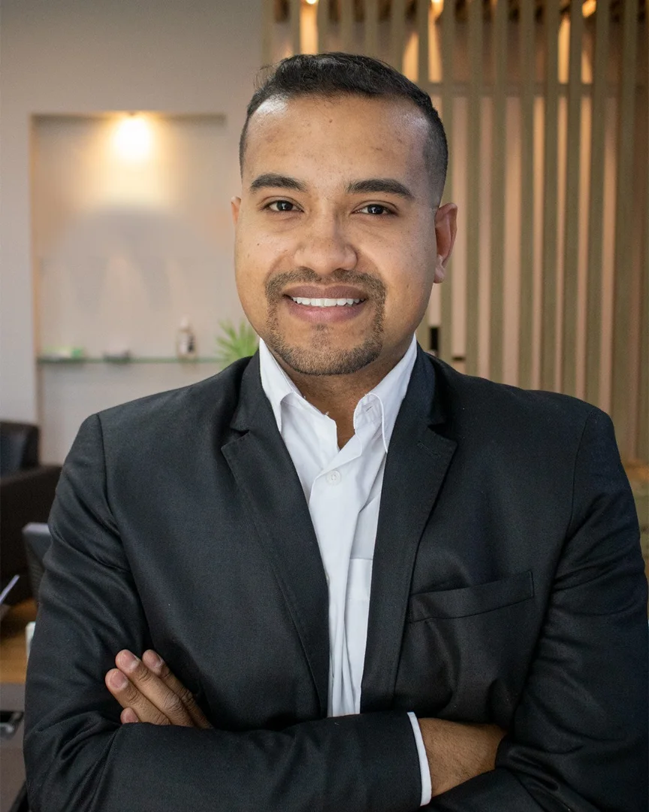

Perícia Forense Digital
Coleta, preservação e análise de evidências em celulares, computadores, e-mails e redes sociais, com laudo e cadeia de custódia.
- Conversas de WhatsApp
- Celulares e computadores
- E-mails e redes sociais
- Assistente técnico
Perícia forense digital, assistência técnica em processos judiciais, manutenção de computadores e criação de sites, com atendimento direto e linguagem clara.

Do computador que não liga ao laudo técnico que precisa resistir a um processo: um único profissional, do início ao fim.
Coleta, preservação e análise de evidências em celulares, computadores, e-mails e redes sociais, com laudo e cadeia de custódia.
PCs sob medida para trabalho, estudo, jogos e edição, com peças certas para o seu orçamento.
Computador lento, vírus, tela azul ou sem boot? Diagnóstico honesto e solução direta.
Site profissional, rápido e otimizado para o Google, com botão de WhatsApp para gerar contatos.
Arquivos apagados, HD ou pendrive com defeito, cartão de memória corrompido: avaliação e tentativa de recuperação.
Proteção de contas, backups, orientação para empresas e resposta a golpes, invasões e vazamentos.
Mensagens apagadas, prints sem validade e arquivos alterados enfraquecem um processo. A perícia forense preserva o conteúdo de forma técnica, com procedimento verificável.
Importante: se a prova está em um celular ou computador, evite usar, formatar ou apagar o aparelho antes de falar comigo. Cada uso pode alterar vestígios.
Um processo claro, sem juridiquês.
Perito forense digital e profissional de tecnologia da informação, com atuação em processos judiciais do Tribunal de Justiça de São Paulo. Meu trabalho une conhecimento técnico, rigor metodológico e comunicação clara para que clientes, advogados e magistrados entendam exatamente o que as evidências mostram.
Além da perícia, atendo pessoas e empresas com montagem e manutenção de computadores, redes, segurança e criação de sites: tecnologia que resolve o problema, sem enrolação.
Tipos de demanda em que já atuei e que mais chegam ao meu atendimento.
Verificação de mensagens, áudios e imagens apresentados como prova, identificando possíveis adulterações.
Extração e exame de dados em celulares e computadores vinculados a processos judiciais.
Apuração técnica de invasões de conta, golpes online e uso não autorizado de sistemas.
Por dever de sigilo, números de processos, partes e detalhes de casos não são divulgados. A conversa inicial também é confidencial.
Pode ser aceito, mas é facilmente contestado, já que prints podem ser editados. A perícia preserva a conversa a partir do próprio aparelho, com metadados e registro da coleta, o que dá muito mais segurança jurídica.
Depende do tipo de material, da quantidade de dispositivos e da complexidade. Envie um resumo pelo WhatsApp e retorno com uma estimativa clara antes de qualquer contratação.
Sim. Acompanho perícias judiciais, elaboro pareceres, formulo quesitos e analiso laudos já produzidos.
Em muitos casos, sim. Quanto menos o aparelho for usado depois da exclusão, maiores as chances. Avalio e informo a viabilidade antes de iniciar.
Suporte técnico e criação de sites podem ser feitos remotamente. Perícias que exigem o aparelho são combinadas presencialmente, com cuidado na custódia.
Totalmente. Informações e materiais recebidos são tratados com sigilo e usados apenas para o fim contratado.
Preencha ao lado e sua mensagem chega pronta ao meu WhatsApp. Respondo o quanto antes, com uma orientação inicial sem compromisso.
(11) 95947-3491 Atendimento em São Paulo, Grande SP e remoto para todo o Brasil.